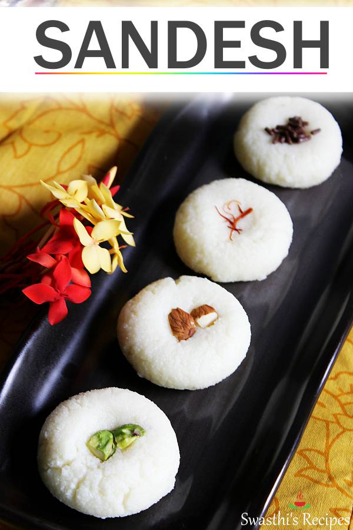
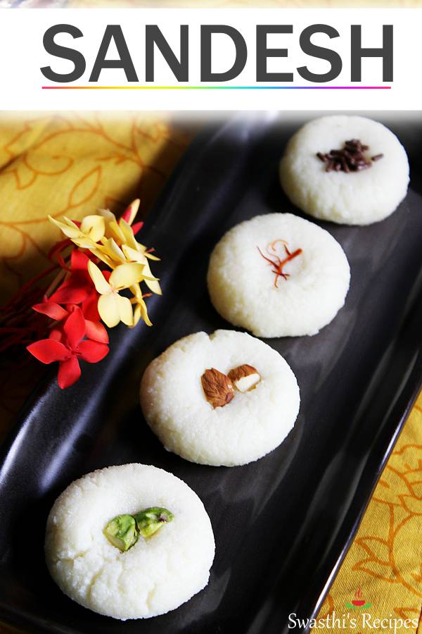

HELLO WEST BENGAL!
HERE ARE SOME FAMOUS FOOD FROM WEST BENGAL
 

Veg food which we can found in West Bengal is
- DHOKAR DALNA
- SHUKTO
- BASANTI PULAO
- ALOO POSTO
Some non veg food
- SHUKTO
- Shukto is a popular vegetable dish in Bengali cuisine usually served with rice in the West Bengal state of India and in the neighbouring country Bangladesh.
- DOI LLISH
- Doi Ilish is a signature Bengali Ilish Mach preparation that is widely enjoyed in the region.
It is prepared with fresh Hilsa fish chunks that are cooked in a yogurt-based sauce.
A normal meal plate contains
| Sr No |
Dish Name |
| 1 |
Bhaat |
| 2 |
Aloo Bhaaja |
| 3 |
Chingri Machar Malaikari |
| 4 |
Papad |
| 5 |
Mutton chutney |
| 6 |
Mishty doi |